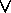

Recursive Algorithm
Recursive Definition
Recursive Algorithm
Subjects to be Learned
- solving problem with recursive algorithm
- computing function with recursive algorithm
- Checking set membership with recursive algorithm
Contents
A recursive algorithm
is an algorithm which
calls itself with "smaller (or simpler)" input values, and which obtains the result for the current
input by applying simple operations to the returned value for the smaller (or simpler) input.
More generally if a problem can be solved
utilizing solutions to smaller
versions of the same problem, and the smaller versions reduce to easily solvable cases,
then one can use a recursive algorithm to solve that problem.
For example, the elements of a recursively defined set, or the value of a recursively defined function
can be obtained by a recursive algorithm.
If a set or a function is defined recursively, then a recursive algorithm to compute
its members or values mirrors the definition. Initial steps of the recursive algorithm
correspond to the basis clause of the recursive definition and they identify the basis elements.
They are then followed by
steps corresponding to the inductive clause, which reduce the computation for an element
of one generation to that of
elements of the immediately preceding generation.
In general, recursive computer programs require more memory and computation compared with iterative
algorithms, but they are simpler and for many cases a natural way of thinking about the problem.
Example 1: Algorithm for finding the k-th even natural number
Note here that this can be solved very easily by simply outputting 2*(k - 1)
for a given k .
The purpose here, however, is to illustrate the basic idea of recursion rather than solving the problem.
Algorithm 1: Even(positive integer k)
Input: k , a positive integer
Output: k-th even natural number (the first even being 0)
Algorithm:
if k = 1, then return 0;
else return Even(k-1) + 2 .
Here the computation of Even(k) is reduced to that of Even
for a smaller input value, that is
Even(k-1). Even(k) eventually becomes Even(1)
which is 0 by the first line. For example,
to compute Even(3), Algorithm Even(k) is called with
k = 2. In the computation of Even(2), Algorithm
Even(k) is called with k = 1.
Since Even(1) = 0, 0 is returned for the computation of
Even(2), and Even(2) = Even(1) + 2 = 2
is
obtained. This value 2 for Even(2) is now returned to the computation of Even(3), and Even(3) = Even(2) + 2
= 4 is obtained.
As can be seen by comparing this algorithm with the recursive definition of
the set of
nonnegative even numbers, the first line of the algorithm corresponds
to the basis clause of the definition, and the second line corresponds
to the inductive clause.
By way of comparison, let us see how the same problem can be solved by an iterative algorithm.
Algorithm 1-a: Even(positive integer k)
Input: k, a positive integer
Output: k-th even natural number (the first even being 0)
Algorithm:
int i, even;
i := 1;
even := 0;
while( i < k ) {
even := even + 2;
i := i + 1;
}
return even .
Example 2: Algorithm for computing the k-th power of
2
Algorithm 2 Power_of_2(natural number k)
Input: k , a natural number
Output: k-th power of 2
Algorithm:
if k = 0, then return 1;
else return 2*Power_of_2(k - 1) .
By way of comparison, let us see how the same problem can be solved by an iterative algorithm.
Algorithm 2-a Power_of_2(natural number k)
Input: k , a natural number
Output: k-th power of 2
Algorithm:
int i, power;
i := 0;
power := 1;
while( i < k ) {
power := power * 2;
i := i + 1;
}
return power .
The next example does not have any corresponding recursive definition.
It shows a recursive way of solving a problem.
Example 3: Recursive Algorithm for Sequential Search
Algorithm 3 SeqSearch(L, i, j, x)
Input:
L is an array, i and j are positive integers, i
 j, and x is the key
to be searched for in L.
j, and x is the key
to be searched for in L.
Output: If x is in L between indexes i
and j, then output its index, else output 0.
Algorithm:
if i
j , then
{
if L(i) = x, then return
i ;
else return SeqSearch(L, i+1, j, x)
}
else return 0.
Recursive algorithms can also be used to test objects for membership in a set.
Example 4: Algorithm for testing whether or not a number x is a natural number
Algorithm 4 Natural(a number x)
Input: A number x
Output: "Yes" if x is a natural number, else "No"
Algorithm:
if x < 0, then return "No"
else
if x = 0, then return "Yes"
else return Natural( x - 1 )
Example 5: Algorithm for testing whether or not an expression w is a proposition(propositional form)
Algorithm 5 Proposition( a string w )
Input: A string w
Output: "Yes" if w is a proposition, else "No"
Algorithm:
if w is 1(true), 0(false), or a propositional variable,
then return "Yes"
else if w = ~w1, then return
Proposition(w1)
else
if ( w = w1
 w2 or
w1  w2
or
w1
w2
or
w1  w2
or
w1
w2
or
w1  w2 )
and
w2 )
and
Proposition(w1) = Yes
and Proposition(w2) = Yes
then return Yes
else return No
end
Test Your Understanding of Recursive Algorithm
Indicate which of the following statements are correct and which are not.
Click Yes or No , then Submit.
Next -- First Principle of Mathematical Induction
Back to Schedule
Back to Table of Contents